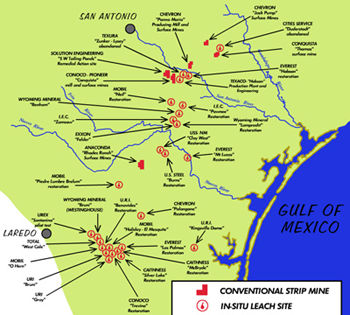

|
 (click the image to see a bigger map) |
The Texas Uranium Boom
In 1954-55, an uranium ore deposit was found in southwestern Karnes County, Texas. This discovery set events into motion which would foster the development of an industry which would supply the majority of U.S. uranium production, and, from it's legacy of poisoned land and water, forecast the destinys of ranchers and farmers. In the years that followed, more than 20 corporations arrived and conducted a variety of exploration, development, production, and reclamation activities for uranium materials, including uranium mining, milling, and waste disposal operations which have affected thousands of acres in 18 South Texas counties. The uranium industry in south Texas expanded until 1979 when the price of uranium oxide reached it's peak, and in 1984 when the market crashed. Up until the late 1980s, a major portion of uranium ore produced in the US came from Texas. |
| To see more photography of Sharon Stewart, which is accompanied documentary style with quotes from South Texans in the photographed regions, please visit this gallery hosted by the Boston University School of Public Health. |
{kind=link}